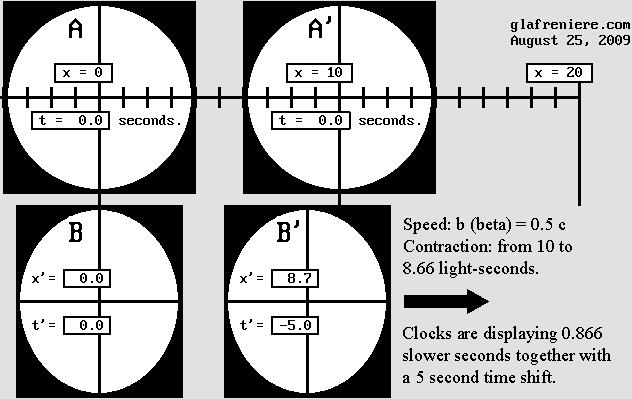
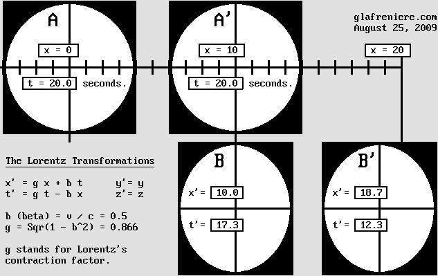
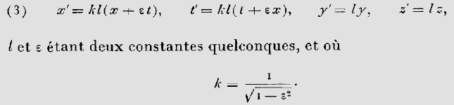
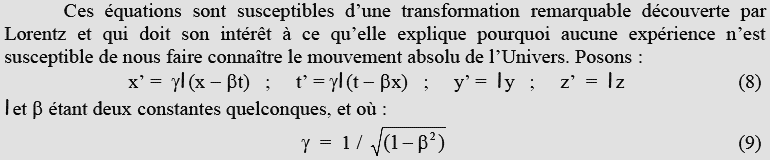

|
x' = g x + b t t' = g t – b x y' = y z' = z b (beta) = v / c = 0.5 g (contraction) = Sqr(1 – b ^ 2) = 0.866
This reversed equation set is much more easy to deal with because it yields exactly what Lorentz had in mind in 1904. See for yourself:
1 – Matter undergoes a contraction in accordance with g x. The normal A to A' distance being ten light-seconds, the B to B' distance below is 0.866 * 10 = 8.66 light-seconds instead. The 8 x 8 light-second squares transform into 8 x 6.9 rectangles, and circles transform to squashed ellipses. The contraction also applies to distances between pieces of matter for mechanical reasons. 2 – Matter moves from g x to g x + b t. This is merely a translation motion, that is to say Galileo's transformation which leads to his well known Relativity Principle: x' = x – v t, the reversed equation being: x = x' + v t or x' = x + v t as well.
3 – Clocks display slower seconds in accordance with: t' = g t. Below, g = 0.866 so that clocks are displaying 8.66 slower seconds after a 10 second delay (.866 * 10 = 8.66). 4 – Clocks display a time shift in accordance with: – b x. Below, b (beta) = .5, so that the B' clock exhibits a –5 second time shift with respect to B according to –0.5 * 10.
Knowing that, one can easily compare the two systems A-A' and B-B' below:
 Observers A and B adjust their clock to t = t' = 0 when they meet. Observer B' then tries to synchronize his clock according to B, but the procedure ends up with a –5 second time shift. Observers B and B' try to maintain a 10 light-second distance to each other but the resulting distance is rather 8.66 light-seconds.
Now, let's examine the situation after a 20 second delay:
 Because observer B truly moves at 0.5 c, he is now meeting exactly A' whose distance to A is 10 light-seconds. Because clock B ticks slower, it displays only: g * t = 17.32 seconds instead of 20 seconds. Observer B is unaware of the contraction. Additionally, he erroneously observes that A and A' are moving backward at 0.5 c. B erroneously observes that clock A is ticking slower so that it now seems to display: g * 17.32 = 15 seconds. Because he is meeting A', B observes that the apparently slower clock A' exhibits a + 5 second time shift (15 + 5 = 20 sec). B thinks that his own clock indicates 17.3 seconds because apparently, the A to A' distance is only 8.66 light-seconds. Observer B comes to the conclusion that he is stationary and that A and A' are transformed and moving leftward at 0.5 c. Because his measures are correct, observer A also comes to the conclusion that he is stationary and that B and B' are moving.
Below is a video which reproduces more clearly the scene shown above. It should be helpful in order to understand why observer B especially is fooled by the Lorentz transformations. Lorentz's reversed equations. You may doubt my equations, which is advisable. One must firstly be aware that Henri Poincare discovered Relativity well before Einstein and that he was a superb mathematician. He could simplify Lorentz's equations (Woldemar Voigt's ones, actually) as soon as 1901. Here is a copy from his French book "Electricity and Optics":
 Poincare could simplify Woldemar Voigt's equations as shown above, but Voigt's useless constant "l" is still present.
 This is a transposition by Christian Marchal using more modern notation such as the gamma factor and the beta normalized speed.
By comparison, Lorentz original equations appear quite obscure. The first equation may be simplified to: x' = (x – v t) / g and Voigt's useless constant is absent. Unfortunately, this equation set creates a new "space-time" frame of reference which is incompatible with the first one.
Lorentz found that Voigt's constant was useless because its value should be 1. This constant being eliminated, Lorentz's first equation simplifies to: According to Lorentz : x' = (x – v t) / g According to Poincare : x' = gamma (x – b t) The unknown variable being x, Poincare's equation must be rearranged like this: x = x' / gamma + b t Then Lorentz's contraction factor g, which is given by 1 / gamma, may replace the gamma factor: x = g x' + b t And finally, because x and t should obviously stand for the unmoving system variables, one must swap x and x':
The same process applied to the time equation leads to:
Thus, and this is true even for Einstein's Relativity, x' for the moving observer B' shown above is 18.66 light-seconds, and t' is 12.32 seconds after a 20 second delay (x = 10, t = 20, beta = 0.5, g = 0.866): x' = g x + b t = (0.866 * 10) + (0.5 * 20) = 18.66 light-seconds. t' = g t – b x = (0.866 * 20) – (0.5 * 10) = 12.32 seconds. What is remarkable is that all those variables (x, x'; t, t') along with the sign (– instead of +) are fully reversible in order to retrieve the initial x and t variables. This amazing reciprocity was Poincare's discovery, who used it in 1904 in order to establish his Relativity Postulate: x = g x' – b t' = 10 light-seconds. t = g t' + b x' = 20 seconds. Lorentz's version also works on the condition that x and x' are swapped (hence using t, not t'): x = (x' – b t) / g = 10 secondes-lumière.
It should be pointed out that these new inverted equations are mainly intended to transform a stationary emitter into a moving one. This produces a Doppler effect. In this case, the Cartesian coordinates x, y et z stand for wavelength and the t variable stands for the wave period in 2 * pi units. Their purpose is definitely not to transform space and time. The original version was supposed to correct the Doppler effect instead, and this is exactly what Woldemar Voigt had in mind in 1887. However, it becomes clear that Voigt's initial equations were wrong for many reasons. His constant was discarded by Lorentz, but it may still be useful in order to obtain the normal Doppler effect. In this case, its value equals g and it should divide the product g * t in the t' equation, not multiply it (compare Poincare's version above to my version below). It was a serious error. In addition, one must use the plus sign for the x equation and the minus sign for the t' one, yet this may be just an anomaly related to Maxwell's equations. And finally, because the x and t variables stand for the moving system coordinates, the original equation set creates an unnecessary and incompatible new frame of reference. Below is the corrected and inverted equation set:
This is Woldemar Voigt's revisited equation set. It remains useful because it can produce a variable Doppler effect where the frequency is adjustable. In the case of the normal Doppler effect, the k constant equals g and the frequency is unchanged. In the case of light and radio waves, the k constant value is 1 and the frequency is slowed down according to g.
Consequently, any Doppler effect involving light or radio waves such as those emitted by a satellite supposes that the frequency is slower according to g, unless it is corrected afterwards. It is undoubtedly a relativistic effect. For example, if the observer is traveling inside the satellite, he is totally unable to detect the Doppler effect in spite of the fact that it is easily detectable on the earth's surface. This occurs because he himself is transformed according to Lorentz. It is about the Doppler effect. Those facts are undisputable. Lorentz's formulas just produce or correct a Doppler effect. And because they were wrongly used as a mathematical artifice whose effect was to transform space and time, I had to correct them. The equation set shown below is simply about a special Doppler effect involving a slower frequency. It just transforms the wavelength and the wave period, not space and time. It is not a theory, is is a fact which is easily verifiable on any emitter surrounded by spherical waves. I wrote a program showing this: Doppler_Voigt_transformations.bas Doppler _Voigt_transformations.exe I did not remove Voigt's constant and hence, you have a choice of four different frequencies. You may press A, B, C or D to change the value of the constant. In Lorentz's version the k =1 constant does not appear any more. In this case, one obtains y' = y and z' = z, and the emitter frequency slows down according to g so that there is no transverse wavelength contraction. Please examine the source code to verify that I am really using my own version of Voigt's equations. This is why I propose that Lorentz's equations should be corrected as below. The reversed set on the right was obtained using Poincare's method:
The Lorentz Transformations revisited. The x et x' variables apply to the same Cartesian frame of reference, which remains stationary. Please bear in mind that this reversed equation set yields totally new results. Strangely, those new results are still consistent with those predicted by Lorentz, Poincare and Einstein. As a matter of fact, they all predicted that a moving material body should appear shorter according to g * x. It should also move according to beta * t. Thus, the equation x' = g x + b t is no surprise. And finally, Lorentz, Poincare and Einstein also told us that a moving clock should tick slower according to: g * t. The accurate time shift according to –beta * x or –v * x / c^2 was Lorentz's discovery. In spite of that, nobody ever proposed those equations up to now. This is weird.
The Time Scanner performs even better. Please examine this small video which I very proud of. It is honestly amazing. It contains a lot of information showing that Lorentz's version of Relativity (1904) was correct. It is a high definition (1280 x 720) Mpeg-4 video using the now well accepted H-264 standard (Divx-7 .mkv Matroska file). I suggest VLC Media Player and the whole bunch of CCCP codecs (unrelated to the USSR!) which includes a free version of Zoom Player, also an excellent player. Below is the FreeBasic program which produced the images. My Time Scanner is capable of accelerating the whole system where emitters and material bodies are moving at different speeds, on condition that they are already transformed. Here, it is accelerated to 50% of the speed of light to the right. However, C and C' are already moving to the right at this speed, and hence their new speed should be the speed of light. But Lorentz and Poincare discovered that no material body is capable of reaching the speed of light. This is why their resulting speed is only .8 c, according to Poincare's law of speed addition which is given by: beta'' = (beta + beta') / (1 + beta * beta') In my opinion, such a magnificent harmony should leave nobody unfeeling. Now, thanks to Lorentz, Relativity can be explained. There are no paradoxes any more. All is clear and logical. On the one hand, it becomes possible to display more than two material bodies (hundreds, actually) whose speed and direction may differ. The results remain perfectly coherent after the scanning process, or the acceleration if you prefer. On the other hand, a preferred stationary frame of reference may be designated as a convention. It should allow all observers to have a better image of their situation. Ideally, it is the one whose speed is intermediate, for instance the red scale as seen from A and B. Surprisingly, this red scale does not transform because its intermediate speed (not exactly .25 c because of Poincare's law of speed addition) is simply inverted after undergoing the acceleration. Its speed being the same, its contraction remains the same, so that A and B can adjust its length when they meet (they must consider that they are moving in opposite directions at the same speed). They can also adjust its clock rate so that it stubbornly displays the "absolute" time on condition that is is placed where x = 0 when A and B meet and on condition that they synchronize all clocks according to t = 0 when they meet, too. The time shift is inverted everywhere else because the red scale is stopped, then accelerated at the same speed in the opposite direction. All becomes perfectly clear. The red scale length does not change and the clock displays the absolute time on condition that A and B, A and C, or B and C (two of them only) designate an intermediate one as a preferred Cartesian frame of reference. Thus, there exists a situation in which space and time remain constant. To put it even more clearly, as Euclid, Galileo, Descartes and Newton always thought, space and time do not transform. In practice, Einstein's theory of Relativity appears inapplicable. Establishing a preferred frame of reference is advantageous. The present demonstration indicates that many of them are possible but that some of them are much better. Only Lorentz's version of Relativity allows such a choice. It should be pointed out that all this cannot be explained without the presence of the aether. Even if it cannot be detected, all happens as if it exists. It is imperative that the speed of light is related to it. The Lorentz transformations indicate that all this happens solely because of the Doppler effect. This strongly suggests that matter is undergoing the Doppler effect. Matter behaves like waves do. Lorentz's Relativity indicates that matter consists of waves propagating at the speed of light. Such waves need a medium, the aether, so that finally, our material world is nothing but the aether... It turns out that the Lorentz transformations are leading us well beyond Relativity. Now, we are dealing with matter mechanics, more accurately the Wave Mechanics. The conclusion is that Newton's laws as well as all physical phenomena descriptions must be upgraded in order to conform with the Wave Mechanics.
LORENTZIAN RELATIVITY IS THE ONLY CORRECT ONE The goal of this page is to show that Lorentz's Relativity is easily explainable. It becomes possible to show why such phenomena are possible. Unfortunately, Lorentz never released a complete version of his ideas like Einstein did. More or less recently, many authors tried to promote them but they frequently deviate into erratic opinions such as faster-than-light speeds. They obviously forget that Lorentz himself found that inertia, and hence matter mass increases according to its speed in such a way that it would be infinite at the speed of light. This is why I am explaining Lorentz version of Relativity the way he himself would have done. As far as I know, this page is fully compatible with Lorentz's ideas, at least around 1904. It is by no means revolutionary. It should be emphasized that Lorentz never doubted the existence of an aether until his death, which occurred in 1928, and hence many years after Einstein's theory triumphed. Unlike Poincare, he was sure that there should exist a preferred frame of reference. He was convinced that matter truly contracts and that moving clocks are displaying slower seconds along with a "local time". Such clocks cannot show the "true time". To put it clearer, Lorentz never proposed an absurd "space-time" transformation. Poincare was much less rigorous. He rejected matter contraction. He thought that optical phenomena were only relative and he wrote that Lorentz's hypothesis was not satisfactory. He even wrote that the aether might some day be considered useless. Below are two quotes from Lorentz which were written several years after 1904. They indicate that Lorentz had finally given up his previous concept and accepted much of Poincare's and Einstein's ideas. However, they are very clear on Lorentz's 1904 theory: |